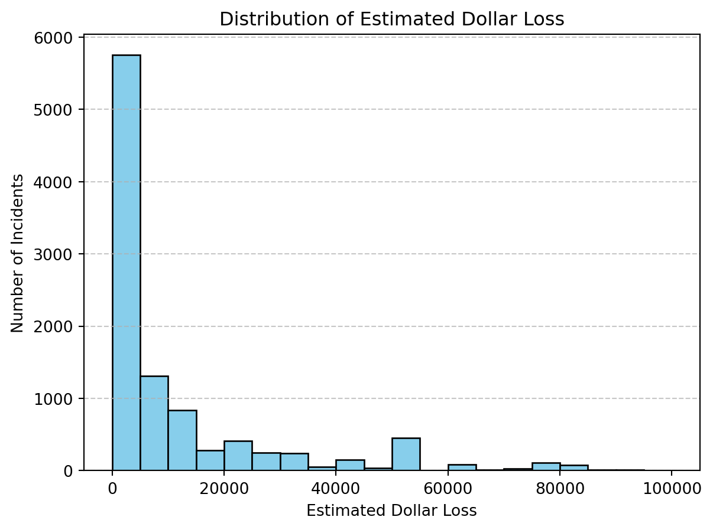
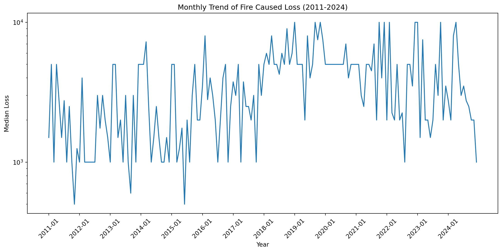
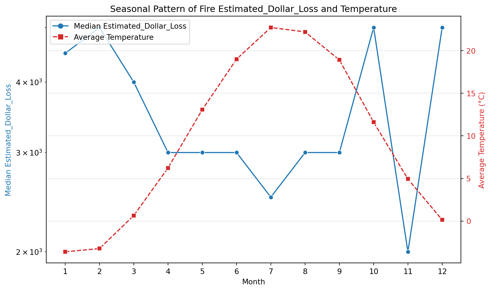
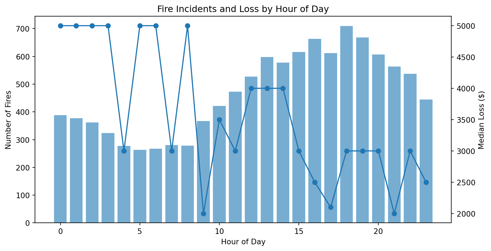
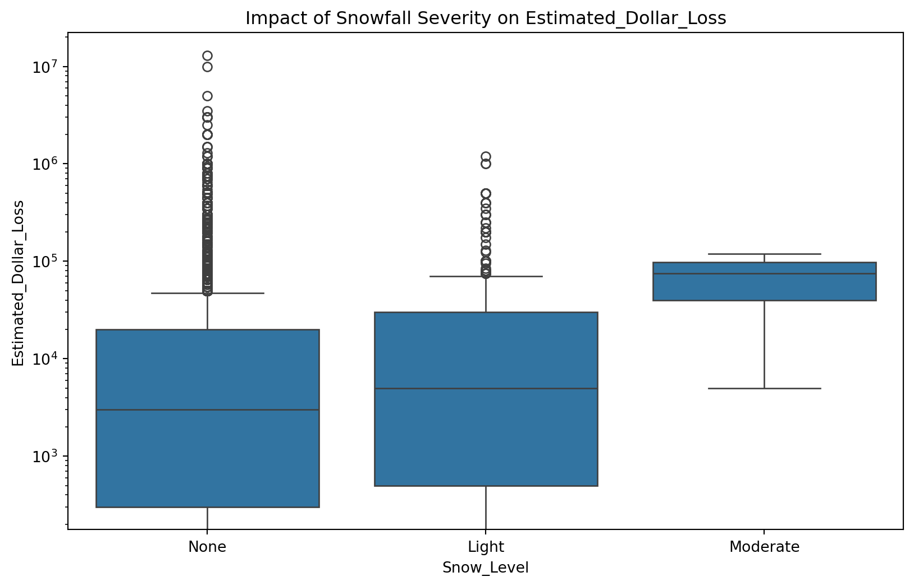
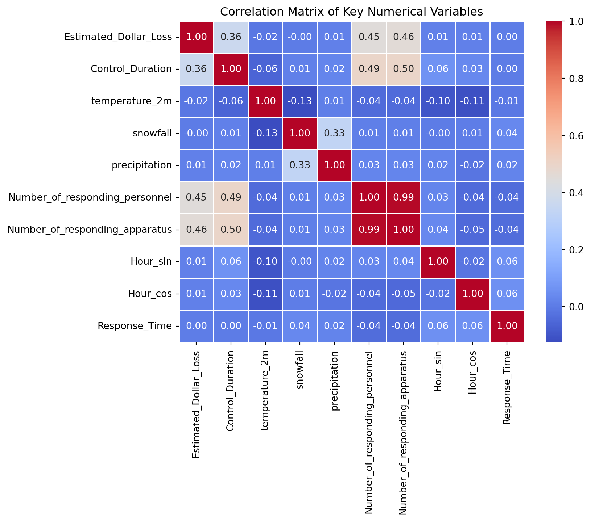
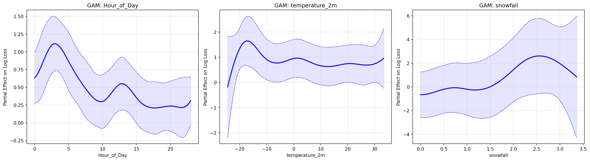
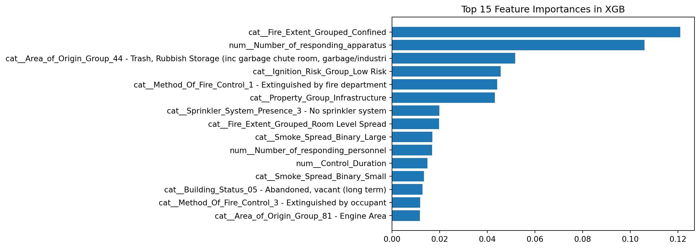
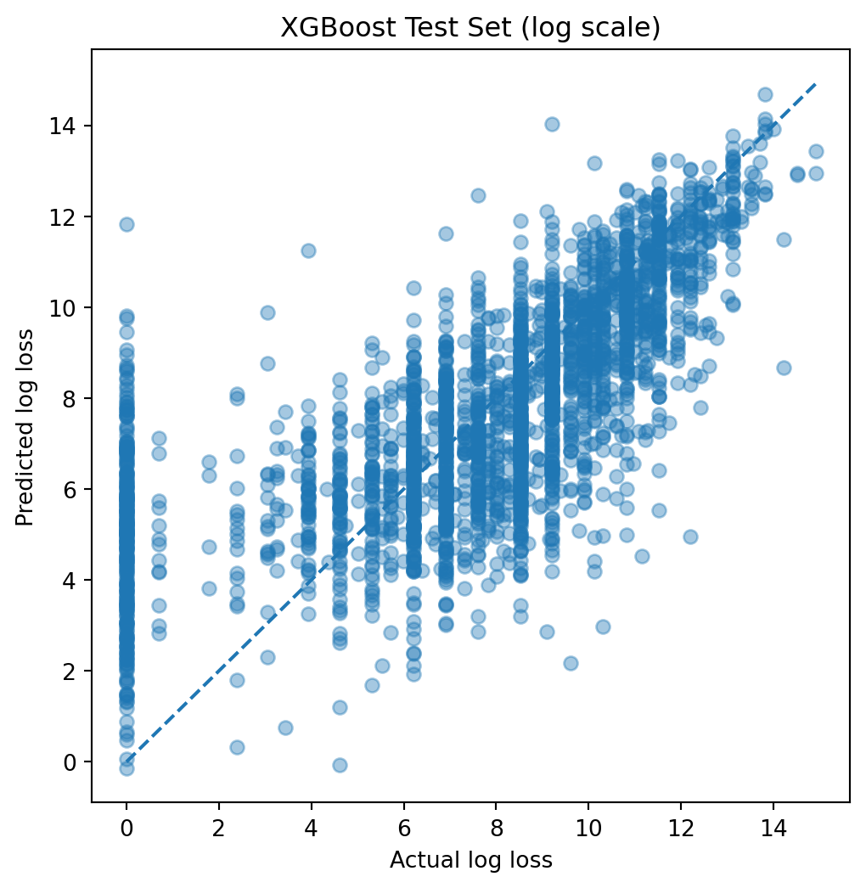
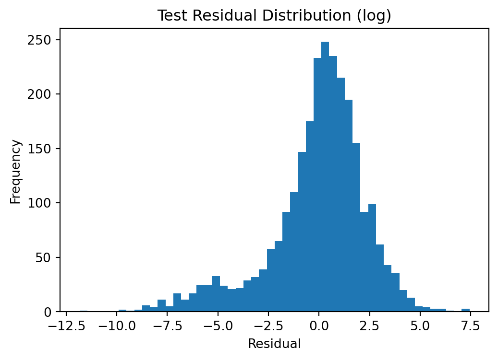

Analysis of Factors Influencing Fire Incident Financial Loss in Toronto
GitHub Repository
The complete reproducible pipeline, including data acquisition scripts and environment configurations, is available here:
https://github.com/JYW5114/JSC370-project
Introduction
This project investigates the factors influencing Fire Incident Financial Loss within the City of Toronto. This metric is defined as the estimated dollar loss associated with a fire incident, including property damage and related losses. Understanding the drivers of financial loss is critical for optimizing urban resource allocation, improving fire prevention strategies, and minimizing economic impact.
Research Questions: What factors influence the financial loss of fire incidents? How do weather conditions, property characteristics, and response resources relate to the severity of the loss? Are certain spatial and structural features consistently associated with higher losses?
Research Hypothesis: The model predicts financial loss immediately after a fire is brought under control, before the official damage assessment is completed. We hypothesize that incident characteristics, property type, response resources, and weather conditions contain enough information to approximate the final financial loss. If successful, such predictions could provide an early estimate of economic impact and help prioritize post-incident response and resource allocation.
Methods
Data Acquisition
To satisfy the course requirement for dynamic data retrieval, I integrated two primary API sources:
Toronto Open Data API: I retrieved the
fire-incidentsdataset by the CKAN API using therequestslibrary. This dataset provides comprehensive logs of every fire emergency call from 2011-01-01 to 2024-12-31. Each record corresponds to a single incident and includes information about incident location, property characteristics, response resources, and fire suppression timelines.Open-Meteo Historical Weather API: To examine the environmental context of fire incidents, I utilized the Open-Meteo Historical Weather API. I queried hourly data for temperature (2m), snowfall, and precipitation from January 2011 to December 2024, using the specific coordinates for Toronto (Lat: 43.65, Lon: -79.38).
Data Cleaning & Wrangling
- Preparation: I used
dt.floor('H')on the fire dataset to enable a preciseleft joinwith the weather API output. I filtered the dataset to include only incidents with non-missingEstimated_Dollar_Lossvalues and removed extreme outliers using a log-transform approach to stabilize variance. Variables likeIncident_Station_Areacontained a mix of integer and string types, so data type unification was performed. Because the dataset includes incidents other than fires (e.g., medical calls), the data was further filtered to retain fire-related incidents only.
Detailed code of this process and data acquisition from the APIs can be found here: https://github.com/JYW5114/JSC370-project/blob/main/dataset.ipynb
The prepared dataset is saved in the same github repository. It contains 36564 rows(observations) and 51 columns (features).
Feature Engineering: I constructed a comprehensive set of temporal, spatial, operational, and risk-related features to enhance predictive performance and interpretability.
Temporal features: From the event timestamp (
Hourly_Timestamp), I derivedHour_of_Day,Month, andis_weekendto capture diurnal, seasonal, and weekly patterns. To better represent cyclic time structure, I also encoded hour using sinusoidal transformations (Hour_sin,Hour_cos) to preserve periodicity.Response dynamics: I defined
Response_Timeas the elapsed time between TFS alarm and arrival, andControl_Durationas the time from TFS arrival to the moment the fire is declared under control. These variables capture emergency response efficiency and fire suppression duration.Spatial features: I computed
distance_to_downtownusing the Haversine formula to measure geographic distance from Toronto’s downtown, enabling analysis of spatial heterogeneity in fire incidents.Incident and structural categorization: I engineered domain-specific categorical features including
Property_Group(e.g., Residential, Commercial),Scale(based on number of responding apparatus),Area_of_Origin_Group,Fire_Extent_Grouped,Smoke_Spread_Binary, andLevel_Of_Origin_Group. These transformations reduce high-cardinality fire descriptors into interpretable, risk-relevant categories.Safety and system indicators: I created binary and standardized indicators such as
Alarm_Binary(fire alarm presence),Sprinkler_System_Presence, andExposure_Binaryto capture building safety infrastructure and fire spread conditions.Risk-based features: I derived
Ignition_Risk_Groupby ranking ignition sources based on median estimated dollar loss and discretizing them into risk tiers. I also includedFire_Severity_Arrivalto represent the initial severity of the fire upon TFS arrival.
Preventing Data Leakage: The full dataset was first split into training, validation, and testing sets. Exploratory analysis and model development were conducted only on the training data. In accordance with our research hypothesis, variables that become available after the fire is brought under control were excluded from the model, such as
Count_of_Persons_Rescued,Estimated_Number_Of_Persons_DisplacedandBusiness_Impact.
Statistical Tools and Models
Exploratory data analysis (EDA) was conducted using Python libraries including pandas, seaborn, matplotlib, and plotly. Summary statistics and visualizations were used to understand the distribution of fire caused loss and identify potential relationships between explanatory variables and the financial loss.
To formally assess statistical relationships, hypothesis testing was conducted to evaluate whether the presence of system indicators (e.g., Fire Alarms, Sprinkler Systems) is associated with differences in estimated financial loss.
Several visualization techniques were applied:
Histograms to analyze the distribution of the target and features
Boxplots to examine relationships between categorical variables and the loss
Line plots to explore relationships between continuous variables and identify potential periodic patterns
Geographic maps to visualize the spatial distribution of fire incidents across Toronto
Scatter plots to visualize the actual and predicted fire loss
Additionally, Generalized Additive Models (GAMs) were employed using the pygam library to investigate non-linear relationships between continuous predictors (e.g., temperature, time of day) and the log-transformed financial loss.
For the final modeling stage, Random Forest and XGBoost models are implemented to predict fire caused loss based on features, including incident characteristics, weather conditions, response resources and the engineered feature stated above.
Both models were trained on the log-transformed financial loss to reduce skewness and improve stability. Hyperparameter tuning was performed using cross-validation to optimize predictive performance, with root mean squared error (RMSE) as the primary evaluation metric.
Model performance was assessed using both log-scale and dollar-scale metrics, including RMSE, MAE and \(R^2\), in order to evaluate both statistical accuracy and practical interpretability. Across validation experiments, XGBoost demonstrated slightly better predictive performance compared to Random Forest.
Further diagnostic analysis revealed a notable gap between MAE and RMSE, indicating substantial prediction errors at extremes of the loss distribution. Residual analysis showed a left-skewed distribution, suggesting that while the model is generally well-centered for moderate loss events, it tends to overestimate financial loss for some incidents. At the same time, the predicted vs actual scatter plot highlights instability in the zero-loss region, where the model struggles to identify zero losses.
To further improve performance, a two-stage modeling strategy separating zero- and non-zero-loss incidents was explored but did not yield improvements because the classifier misclassifies many true zero-loss cases as non-zero, forcing the regression model to assign them positive predictions. This likely occurs because many zero-loss cases are not truly zero but reflect reporting issues or missing values, making the classification boundary inherently noisy.
Overall, the one-staged XGBoost model with log-transformed targets provided the most stable and reliable performance. The results suggest that while engineered features capture substantial signal in the data, predictive uncertainty remains high in extreme fire loss and zero loss scenarios.
Results
1. Spatial distribution of fire in Toronto by Year
In this visualization, point size represents the estimated financial loss, while color indicates the control duration. The slider controls the specific year from 2011 to 2024. Hovering over the point, the estimated dollar loss, property type and exact location are provided.
It’s the first interactive visualization on my website.
It shows that fire incidents in Toronto are generally spread across the city, although the downtown area exhibits the highest density of incidents. Most fires appear to be controlled relatively quickly. However, incidents associated with larger financial losses and longer control durations are more frequently observed in the downtown and northwestern areas.
The plot suggests that the relationship between fire duration and financial loss is not straightforward. Some incidents with relatively short control durations still result in substantial financial damage, while fires that take longer to control do not necessarily lead to extremely large losses. This pattern indicates that additional factors beyond fire duration likely play an important role in determining the final financial impact of an incident.
2. Distribution of the financial loss
The overall distribution of financial loss is highly right-skewed, as shown in Figure 1. Most incidents result in relatively small losses, while a small number of fires lead to extremely large financial damages.
To further summarize the key variables used in the analysis, Table 1 presents several descriptive statistics including the mean, median, standard deviation, and range.
| mean | median | std | min | max | |
|---|---|---|---|---|---|
| Estimated_Dollar_Loss | 38305.75 | 3000.0 | 209327.10 | 0.0 | 13000000.00 |
| Control_Duration | 833.53 | 404.0 | 1337.06 | 1.0 | 14379.00 |
| temperature_2m | 9.99 | 9.8 | 10.49 | -24.5 | 33.30 |
| snowfall | 0.01 | 0.0 | 0.09 | 0.0 | 3.36 |
Examining the monthly trend of fire-related losses in Figure 2 reveals a recurring pattern across many years: a noticeable downward spike appears around the middle of the year, where total losses temporarily decrease before rising again. This suggests the presence of a potential seasonal or periodic effect. Overall, the total financial losses remain relatively stable throughout the study period, with a noticeable increase between 2018 and 2021, followed by a slight decrease from 2022 to 2024.

3. Temporal Features
By analyzing the relationship between month, temperature, and financial loss in Figure 3, a clear periodic pattern can be observed. While temperature follows a strong seasonal cycle across months, it also captures underlying variation more directly, as substantial temperature differences can exist within the same month.

Figure 4 reveals diurnal variations in fire-related dollar losses, with incidents occurring during the night showing a lower frequency but a higher median loss. To represent this cyclical nature effectively, I encoded the ‘Hour of Day’ as a periodic variable using sine and cosine transformations in the model.

4. Response Time across Wards and Loss Levels
It’s the second interactive visualization on my website.
Overall, median response times are similar across loss levels in most wards. However, Wards 24, 25, 26, and 39 show consistently slower responses, while Wards 13, 27, 28, and 29 are generally faster.
Some wards (15, 16, 22, 33, 36) exhibit longer response times specifically for high-loss incidents, suggesting that delays in these areas may contribute more directly to severe outcomes. In contrast, wards such as 4 and 13 maintain relatively fast response times even in high-loss cases, indicating that factors like fire severity at arrival or asset vulnerability may play a larger role than response delay.
Response times are also more variable in Wards 1–15 compared to 26–44, reflecting greater operational variability. Additionally, many extreme high-loss outliers are associated with vehicle fires, suggesting higher volatility and rapid escalation in these incidents.
5. Weather Effects
The weather also appears to influence the loss. Figure 5 shows a slight increase in financial loss when snowfall reaches moderate or higher levels. Snow may slow response times or create additional operational challenges, potentially allowing fires to spread before they are fully controlled. However, the precipitation doesn’t show the same pattern, with different levels of rainfall generally associated with somewhat similar losses.

6. Fire Suppression Resources and Property Uses
This Dashboard presents a parallel categories (Sankey) plot, which is used to examine how Property_Group, Sprinkler_System_Presence and Scale jointly interact and influence fire loss outcomes. Here, incident scale is defined by the number of responding apparatus: “Small” (≤ 5) and “Large” (> 5). Each path in the diagram represents a combination of these attributes, while the color encoding reflects the Loss_Level (Low, Medium, High by 0.33 and 0.66 quantiles).
The underlying risk of a specific fire scale is approximately similarly distributed across the three property groups. In general, larger-scale incidents are more likely to be associated with higher financial losses. Properties equipped with sprinkler systems tend to exhibit a relatively lower risk of generating large losses.
In Residential and Commercial groups, as fire suppression improves from No to Partial and to Full sprinkler coverage, the proportion of high-loss (dark purple) outcomes decreases in cases of large scale. This suggests that sprinkler systems play a strong mitigating role in reducing severe financial loss when incidents escalate. However, this relationship is not equally evident in the Other property category.
7. Other Effects
Besides all the findings mentioned above, I also examined other categorical features including Area_of_Origin_Group, Smoke_Spread_Binary,Level_Of_Origin_Group, Ignition_Risk_Group, and Alarm_Binary, all of which shows different loss distribution across groups, with a confirmation from hypothesis testing..
8. Correlation Matrix
The correlation matrix in Figure 6 shows that control duration and the number of responding apparatus have the strongest positive relationship with financial loss, while weather variables show very weak correlations. This does not preclude the importance of weather condition. As previously explored in the snowfall analysis (Figure 5), environmental impact manifests through non-linear threshold effects rather than direct linear scaling. Therefore, these features should be retained for machine learning models capable of capturing complex interactions, such as those between freezing temperatures and operational response challenges.

9. Non-linear Weather and Temporal Effects (GAM)
While linear correlations for weather variables appear weak, Generalized Additive Models (GAMs) reveal that their influence is highly non-linear. As shown in Figure 7, the partial dependence plots illustrate how specific predictors drive financial loss once other factors are controlled for.
Diurnal Cycle: The effect of time of a day is notably “wavy,” with a clear peak in loss potential during the early morning hours. This confirms that fires occurring in the deep of night are associated with higher financial severity, likely due to delayed detection.
Temperature Thresholds: The model captures a “hockey-stick” effect for temperature. Below -20°C, the predicted loss surges dramatically, whereas between -10°C and 30°C, the effect remains relatively stable. This suggests that only extreme cold significantly hinders suppression or increases fire intensity.
Snowfall Complexity: Financial loss trends upward as snowfall increases from 0 to 2.5 units. However, the widening confidence intervals at higher snowfall levels indicate data sparsity, suggesting that while heavy snow correlates with higher loss, these extreme events are less frequent.

Modeling
After performing model selections on the two model Families, XGBoost with model__colsample_bytree: 0.7, model__learning_rate: 0.05, model__max_depth: 4, model__min_child_weight: 1, model__n_estimators: 400, model__subsample: 0.7 stands out. Model performance on the validation set is summarized in Table 2.
Model CV RMSE (log) Val RMSE (log) Val RMSE ($) Val R2 (log) \
0 Random Forest 2.493 2.414 125686.481 0.515
1 XGBoost 2.474 2.363 120589.685 0.535
Val R2 ($)
0 0.267
1 0.326 The most important features for the XGBoost model are presented in Figure 8. The predicted versus actual losses on the test set (log scale) are shown in Figure 9, illustrating increased dispersion at extreme values, particularly around zero. The detailed test statistics are summarized in Table 3. At the same time, instability is observed in the zero-loss region in Figure 9, likely reflecting noise or inconsistencies in recorded zero-loss values.

Metric Value
0 RMSE (log) 2.410
1 MAE (log) 1.747
2 R2 (log) 0.532
3 RMSE ($) 119814.139
4 MAE ($) 30681.905
5 R2 ($) 0.377

Conclusions and Summary
This study shows that fire-related financial loss in Toronto is driven by a combination of response efficiency, property characteristics, and fire severity. While weather effects appear weak in linear analysis, they exhibit clear non-linear impacts under extreme conditions.
The XGBoost model achieves moderate predictive performance (\(R^2 \approx 0.53\) in log scale and \(0.38\) in the original scale), indicating that although key patterns are captured, substantial uncertainty remains – particularly for extreme-loss incidents. This reflects both data noise and unobserved factors.
From a practical perspective, the results suggest that improving early detection systems, optimizing response in slower wards, and preparing for extreme weather conditions could help reduce financial loss. Overall, the model provides useful early estimates, but should be used as a decision-support tool rather than a precise predictor.